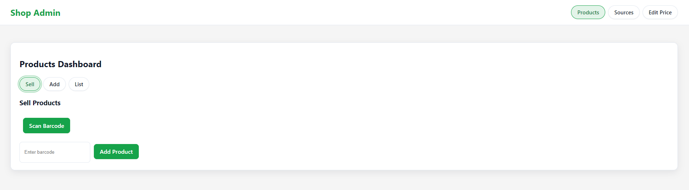

Shop Admin
Lightweight inventory, barcode sales, supplier tracking, and bulk price edits — built for small shops.
Shop Admin is a simple, fast dashboard to manage products, categories, stock quantities, suppliers, and prices. It supports keyboard-first workflows and on-device barcode scanning.
Products Dashboard.
A central hub where shop owners can browse and manage all products in one place.
It includes powerful tools for **searching by name or barcode, filtering by categories or suppliers, and sorting by price, date, or stock levels**.
This dashboard reduces manual work and speeds up day-to-day shop management.
Add Product Form.
Designed for quick input with **barcode scanning, quantity adjustment, category assignment, and supplier selection**.
It allows owners to onboard new products in seconds, ensuring accurate tracking of stock and supplier details.
The form minimizes errors and keeps the inventory up-to-date.

Sell Products Screen.
A fast checkout interface where cashiers can **scan or type barcodes, add products to a cart, and finalize sales instantly**.
Built for speed and accuracy, it reduces waiting time for customers and ensures every sale is recorded in the system.
Ideal for busy small shops with frequent transactions.
Suppliers Management.
Keep a searchable database of all sources — including **supplier names, phone numbers, and addresses**.
Shop owners can track where products come from, manage relationships, and quickly reach suppliers for restocks.
This transparency ensures reliability and cost control in the supply chain.
Bulk Price Editor.
Update multiple items at once by applying filters for **products, suppliers, or categories**, with optional barcode scanning.
This saves significant time when adjusting for seasonal changes, supplier costs, or promotions.
It gives owners full control over pricing without editing each product individually.